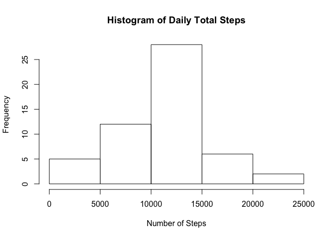
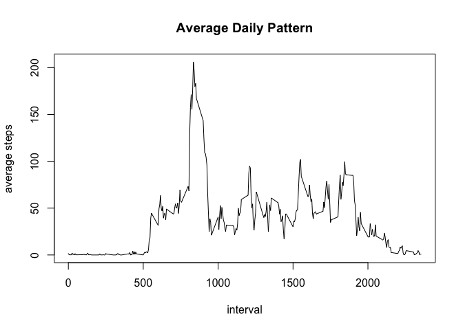
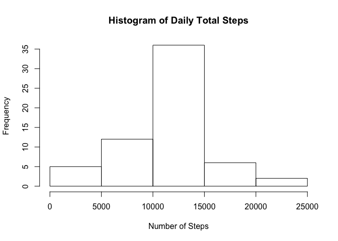
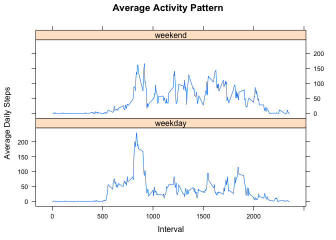

#load the data
data<-read.csv(unz("activity.zip","activity.csv"))
#sum steps, grouping by day
sumSteps<-aggregate(data$steps,by=list(data$date),FUN=sum)#plot a histogram showing frequency of number of steps
hist(sumSteps$x,xlab="Number of Steps",main="Histogram of Daily Total Steps")
#calculate mean in the summed steps data
myMean<-mean(sumSteps$x,na.rm=TRUE)
#calculate median in the summed steps data
myMedian<-median(sumSteps$x,na.rm=TRUE)The mean total daily steps is 10766.19
The median total daily steps is 10765
#calculate the mean number of steps for each interval
meanDaily<-aggregate(data$steps,by=list(data$interval),FUN=mean, na.rm=TRUE)
#set column names of this table
colnames(meanDaily)<-c("interval","mean_steps")
#plot average daily pattern
plot(meanDaily$interval,meanDaily$mean_steps,type="l",main="Average Daily Pattern",xlab="interval",ylab="average steps")
#get the interval with max number of steps
maxstepinterval<-subset(meanDaily,meanDaily$mean_steps==max(meanDaily$mean_steps))$intervalThe interval with maximum number of steps is 835
#count number of NA records
numNa<-sum(is.na(data$steps))The number of NA records in the data is 2304
dataPrime<-data #copy data
naIndices<-with(dataPrime,is.na(dataPrime$steps)) #get all NA indices
for (i in 1:length(naIndices))
{
if (naIndices[i]) #if this index is NA, do replacement logic
{
#find mean associated with this interval
meanForInterval <- meanDaily[meanDaily$interval==dataPrime$interval[i],c("mean_steps")]
#replace value with mean
dataPrime$steps[i]<-meanForInterval
}
}
#on this new data set, sum up the number of steps, grouping by day
sumStepsPrime<-aggregate(dataPrime$steps,by=list(dataPrime$date),FUN=sum)
#plot a histogram of the daily total steps on new data set
hist(sumStepsPrime$x,xlab="Number of Steps",main="Histogram of Daily Total Steps")
#get mean of data set with injected values for NA
myMeanPrime<-mean(sumStepsPrime$x,na.rm=TRUE)
#get median of data set with injected values for NA
myMedianPrime<-median(sumStepsPrime$x,na.rm=TRUE)The mean total daily steps of patched data set is 10766.19.
Compare this to the mean of total daily steps of non-patched data set: 10766.19
The median total daily steps of patched data set is 10766.19
Compare this to median of total daily steps of non-patched data set: 10765
#get the weekday of each date in a vector
weekdayValues<-weekdays(as.Date(dataPrime$date),abbrev=TRUE)
#create new column for dataPrime that indicates whether it's a weekend or weekday as a factor
dataPrime$category<-ifelse(weekdayValues == "Sat" | weekdayValues == "Sun","weekend","weekday")
dataPrime$category<-as.factor(dataPrime$category)
#calculate the mean value of steps taken grouped by interval and category
meanDailyPrime<-aggregate(dataPrime$steps,by=list(dataPrime$interval,dataPrime$category),FUN=mean, na.rm=TRUE)
#set column names
colnames(meanDailyPrime)<-c("interval","category","mean_steps")
#plot weekend vs weekday for average activity pattern using a lattice line plot
library(lattice)
myPlot<-xyplot(mean_steps~interval|category, meanDailyPrime, main="Average Activity Pattern", ylab="Average Daily Steps", xlab="Interval", type="l")
update(myPlot,layout=c(1,2))